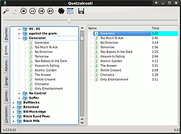

Quetzalcoatl
Dieser Artikel wurde für die folgenden Ubuntu-Versionen getestet:
Ubuntu 14.04 Trusty Tahr
Zum Verständnis dieses Artikels sind folgende Seiten hilfreich:
 Quetzalcoatl
Quetzalcoatl  ist ein Music Player Daemon-Client und basiert auf Python und der Grafikbibliothek Qt.
ist ein Music Player Daemon-Client und basiert auf Python und der Grafikbibliothek Qt.
Ein MPD-Client steuert den MPD-Server auf dem selben oder einem anderen Rechner im Netzwerk. Der MPD-Server stellt eine Musik-Datenbank und Abspiellisten zur Verfügung, deren Inhalte er auf verschiedene Wege (Soundkarte, Stream, etc.) ausgeben kann.
Das Programm befindet sich noch in einem Alpha-Stadium. Bisher ist die Bedienoberfläche nicht übersetzt, sondern ausschließlich in englischer Sprache verfügbar.

Voraussetzungen¶
Folgende Pakete müssen als Voraussetzung installiert werden[1]:
python-kde4
python-qt4
python-mpd (universe)
 mit apturl
mit apturl
Paketliste zum Kopieren:
sudo apt-get install python-kde4 python-qt4 python-mpd
sudo aptitude install python-kde4 python-qt4 python-mpd
Installation¶
Hinweis!
Fremdsoftware kann das System gefährden.
Das Python-Skript kann von Github  heruntergeladen werden und beispielsweise unter /opt/quetzalcoatl/quetzalcoatl.py gespeichert werden, wozu man Root-Rechte benötigt[2].
heruntergeladen werden und beispielsweise unter /opt/quetzalcoatl/quetzalcoatl.py gespeichert werden, wozu man Root-Rechte benötigt[2].
Alternativ kann man Git direkt nutzen:
sudo git clone https://github.com/duganchen/quetzalcoatl.git /opt/quetzalcoatl
Das Skript macht man ausführbar[3] und verlinkt es unter /usr/local/bin, damit das Programm über den Befehl quetzalcoatl gestartet werden kann[4]. Dies geschieht beispielsweise im Terminal mit folgenden Befehlen:
sudo chmod a+x /opt/quetzalcoatl/quetzalcoatl.py sudo ln -s /opt/quetzalcoatl/quetzalcoatl.py /usr/local/bin/quetzalcoatl
Einen Menüeintrag muss man selbst vornehmen.[5] Die Datei /usr/local/share/applications/quetzalcoatl.desktop kann dabei wie folgt aussehen:
[Desktop Entry] Name=Quetzalcoatl GenericName=Quetzalcoatl music player Exec=quetzalcoatl Icon=/usr/share/icons/oxygen/64x64/categories/applications-multimedia.png Terminal=false Type=Application Categories=AudioVideo;Audio;
Benutzung¶
Das Programm bietet gundlegende Funktionen eines Audio-Players und MPD-Clients. Über die Icons in der Werkzeugleiste wird die Verbindung zum MPD-Server hergestellt und der MPD gesteuert. Die Datenbank kann in den vertikal angeordneten Reitern nach verschiedenen Bereichen der ID-Tags sortiert dargestellt werden. Dabei wird im linken Fenster die Datenbank und im rechten Fenster die Wiedergabeliste angezeigt.
| Werkzeugleiste | |
| Icon | Beschreibung |
| "Configure" - Einstellungen für Verbindung und Wiedergabe | |
| "Connect" - zum MPD_server verbinden | |
| "Disconnect" - Verbindung zum MPD-Server trennen | |
| "Stop" - Wiedergabe anhalten | |
| "Start" - Wiedergabe starten | |
| "Pause" - Wiedergabe pausieren | |
 | "Backward" - einen Titel zurückspringen |
| "Forward" - einen Titel vorwärts springen | |
| "Shuffel" - Zufalls-Wiedergabe | |
| "Repeat" - Wiederholen der Abspielliste | |
| "Save" - Abspielliste speichern | |
Deinstallation¶
Um das Programm zu entfernen löscht man:
den Ordner, in dem es installiert ist, zum Beispiel /opt/quetzalcoatl und
den Link /usr/local/bin/quetzalcoatl
den Menüeintrag /usr/local/share/applications/quetzalcoatl.desktop
Die als Voraussetzung installierten Pakete können wieder entfernt werden, sofern man keine anderen Programme nutzt, die diese benötigen.
- Erstellt mit Inyoka
-
 2004 – 2017 ubuntuusers.de • Einige Rechte vorbehalten
2004 – 2017 ubuntuusers.de • Einige Rechte vorbehalten
Lizenz • Kontakt • Datenschutz • Impressum • Serverstatus -
Serverhousing gespendet von